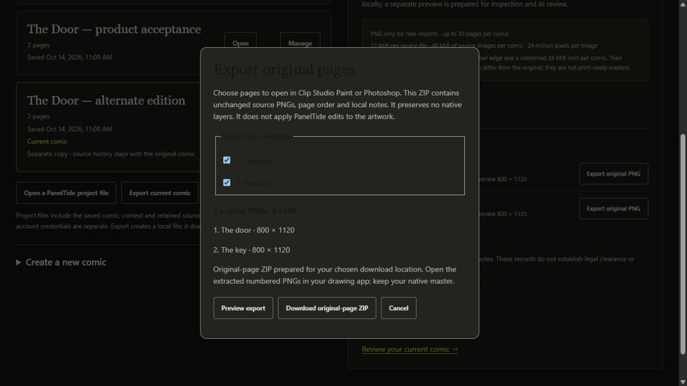
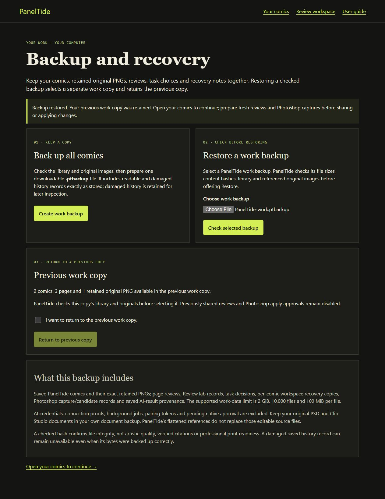
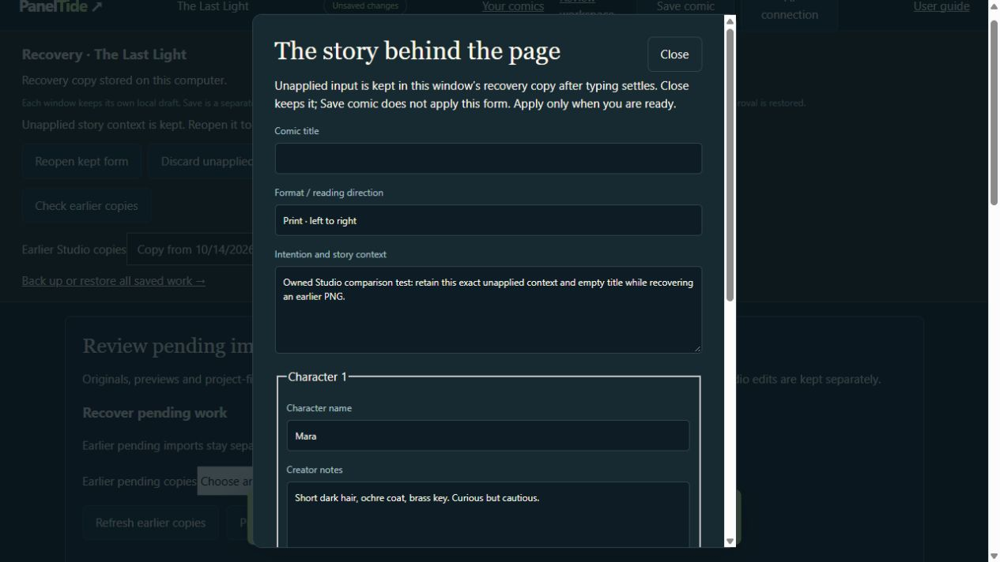
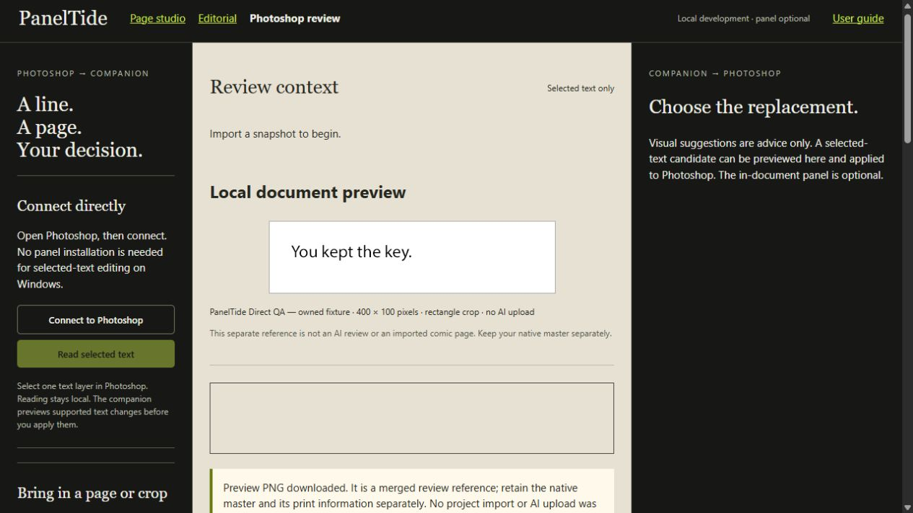
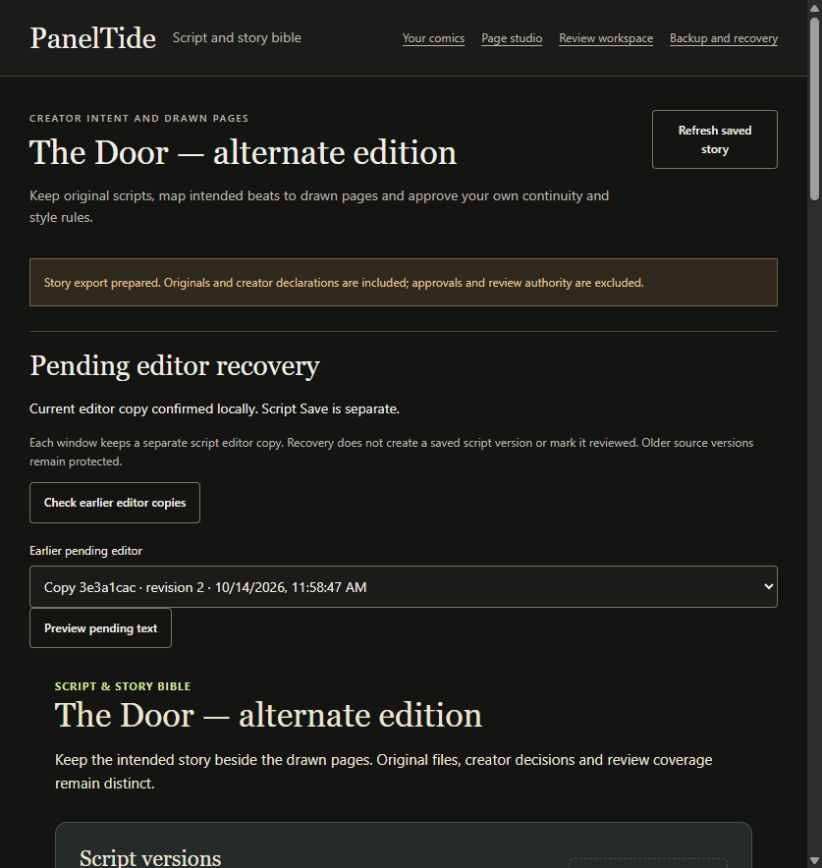

0.11.0
PanelTide Creator's Guide
From first imported pages to considered editorial changes and recoverable work
16 October 2026 | Windows preview 0.11.0
PanelTide 0.11.0 Windows preview; Photoshop development panel 0.5.0
Use your browser's Find command to search this guide. Choose a chapter in Contents or open the printable PDF. This standalone guide starts no application, model or network request.
1. Start here
PanelTide is an editorial companion for comic creators. It helps you supply the right material, examine recommendations and choose a useful next step. It does not replace the artist, publish a comic, certify professional quality or decide that an intentional choice is wrong.
Edition: this guide describes PanelTide 0.11.0, a Windows x64 preview released on 16 October 2026, with the optional Photoshop development panel 0.5.0. It is unsigned and has no commercial service. Independent creator acceptance and signing are not part of this release.
Read the Quick start if you are new. Read the professional workflow if you already have a drawing, lettering or production process. Buttons are named as they appear in 0.11.0. If your app differs, check its actual version and release notes before following a newer workflow.
| You provide | PanelTide provides |
|---|---|
| Your pages, intent and artistic judgment | Local projects, bounded previews, contextual reviews and recorded choices. |
| A drawing app and editable masters | Optional supported Photoshop operations and ordinary PNG exchange. |
| An independently configured AI route, if wanted | Explicit sample verification and selected-material analysis. No included provider entitlement is assumed. |
| Approved business/service configuration, if operated | Separate development account and billing preparation. No live plan is sold. |
There is no ideal panel count imposed on every page. More context can clarify pacing, transitions and voice, but only supplied material that is actually included in the selected review can support a conclusion. An empty result is not a publication pass.
2. Quick start: your first considered change
- Open Your comics. Check the current comic name before adding anything.
- Create a named empty comic, or use the original schematic sample as a separate comic in Page studio. Keep your existing work.
- For your own comic, export PNG pages from Photoshop or Clip Studio Paint. Choose PNG pages, inspect order/names/previews and Add pages to this comic. Import stays local.
- Open Review workspace. Write what the scene should communicate. Save story context and relevant Page script & scene notes.
- Choose One page or With neighbouring pages. Prepare page review saves a local frozen request; no model is called yet.
- Open Connections. If you want automatic AI, complete the separate sample check for a configured route. Read its destination and usage disclosure.
- Return to the prepared review, choose an available route and Analyze these pages. This explicit click can share the selected previews/notes and consume provider usage.
- Compare each observation with the supplied page. Read sources, uncertainty, alternatives and tradeoffs. Keep intentional choices; make only useful advice into tasks.
- Edit a separate candidate in your drawing app. Retain the native original. Re-export and import the actual changed PNG as additional material; changed-page replacement is not automatic.
- Prepare a fresh review of the revision. A task marked complete is your declaration, not evidence that a model or host verified the improvement.
If you do not want to configure AI yet, importing, story notes, schematic planning, viewing saved findings, tasks, original-page exchange and backups remain local. A manual review pack is an optional fallback, not a required beginner procedure.
3. Download, install and open
The current download is PanelTide 0.11.0 for Windows x64, available as setup and portable. It is unsigned; publisher identity is not certified by a signing certificate. No account is required to use the local preview.
- For setup, launch the downloaded installer and choose an installation folder. Installation is per Windows user.
- For portable, launch the downloaded portable executable. Portable refers to how the program starts; its workspace is still stored in this Windows user's application-data folder.
- Open the app. The normal entry point is Review workspace. Choose Your comics for your library.
- If another PanelTide window is already running, use that window. The application uses one owned local service.
- If the service port is occupied by another application, read the error and close only a service you recognize. PanelTide does not kill unrelated processes.
This guide is not an installer. Earlier releases have their own guides and feature boundaries. Automatic updates are not active.
Narrow installed evidence covers one Windows user and OS, including a normal 0.8 to 0.9 update. This is not certification of every Windows version, machine, display, installer path or upgrade failure. Installing 0.11.0 over 0.10 or 0.9 keeps the workspace folder; make a backup in Backup and recovery before any update. Automatic updates are not active.
Application files normally install under %LOCALAPPDATA%\Programs\PanelTide. Workspace data is separate under %APPDATA%\PanelTide\workspace. File > Open workspace data folder opens the actual folder. Moving an executable does not move the workspace or AI access.
4. Find your way around
| Place | Purpose |
|---|---|
| Your comics | Create/open saved comics, Manage, PNG intake, retained originals and file exchange. |
| Review workspace | Intent, page layout, page notes, frozen page reviews, AI routes, findings, tasks and history. |
| Comic review | Plan a review of chosen pages, script or canon in one comic, prepare it, and open received advice as manual work. |
| Large collections | Complete long comics or issues up to 5,000 pages with their original files, separately from Your comics. |
| Large-work review | Plan and run bounded batch reviews of a large collection, with honest coverage of what was and was not assessed. |
| Managing editor | Bring up to twelve saved replies together, compare observations and alternatives, and download a local report. |
| Edit studio | Prepare an optional artwork edit from one saved recommendation: crop, brief, mask, references and candidate comparison. |
| Collection story | The script, story bible and page mapping for one large collection. |
| Bring updated pages back | Export original PNGs for a drawing app and return revised PNG pages with an explicit Replace, Add or Skip choice. |
| Save a complete copy | Copy a saved comic with its scripts, groups and rules into a new, separate comic. |
| Page studio | Schematic beat planning, local checks, unapplied forms and drawing-app delivery. |
| Script and story bible | Immutable text versions, source index, manual artwork mappings and explicit canon decisions. |
| Photoshop connection | Direct selected-text editing and explicit document/crop previews; optional panel exchange. |
| AI connections | Optional provider/model choices, session-only API credentials and sample checks. |
| Backup and recovery | Checked full-work backup, explicit restore and previous work copies. |
| Editorial / Review lab | Advanced scoped manual/MCP exchange and development evaluations. Open them from Advanced connection and review tools in the Review workspace connections view. |
| Account and licences | A separately operated service for actual account records and test-only business preparation. It is not a deployed customer plan. |
| Help | Current capabilities, setup boundaries and edition-specific guides. |
Every page has the same header: PanelTide (back to the Review workspace), the name of the page you are on, Review workspace, Your comics, All places and User guide. All places lists every place in two groups that match the Windows app menus: Main places (the File menu, with Ctrl+1 to Ctrl+7 by default, and App settings) and Tools (the Tools menu). The current place is underlined. Esc or a click elsewhere closes the list. In a narrow window, Review workspace and Your comics move into All places. A header link, like a menu command, asks the current page first: if it holds unsaved input, PanelTide keeps you on the page and says what to save or discard.
The companion is the main workspace. A Photoshop panel is optional. The website provides information and downloads; it is not a cloud comic editor or automatic synchronization service. Opening a page, help, history or connection settings does not start AI inference.
Guide/help windows should remain separate from the editor. Returning from help should focus the existing workspace. If a page has pending input, keep it or explicitly export/recover it before refreshing or leaving. No view can promise that every unconfirmed input has already reached disk.
5. Create and open a comic
- In Your comics, expand Create a new comic.
- Enter Comic name. Choose Print comic left to right, Print comic right to left, or Vertical scroll.
- Optionally describe the audience, mood or story effect. You can refine this later.
- Choose Create comic. A separate empty comic is added; the current saved comic is not overwritten.
- Select an existing library card to open that comic. Confirm its title before importing pages or preparing a review.
The current library supports up to 10 comics and 30 pages per comic. Repeated page names in different comics do not establish shared identity. Reviews and tasks are associated with a stable comic identity, so another comic cannot inherit authority merely by using the same page IDs.
Open a PanelTide project file imports a source-only copy as a new identity. It does not restore the original comic's review/task history, AI authentication or Photoshop pairing. Import is not a full workspace restore.
Before Open, Refresh or a library action, finish the pending import/new-comic work or keep an inspectable copy. A different comic name is not a merge target. Comic identity, original files, review history and native approvals are separate.
6. Manage copies, Archive and Trash
- In Your comics, find the saved comic and choose Manage. The action operates on saved work, not unapplied Studio changes.
- For an alternate edition, choose Save a copy. Enter Copy name and Preview. Read the named source/new comic and history exclusions.
- Choose Save this copy to create and open a new identity. Saved pages/context/credits/original PNG references are retained. Prior reviews/tasks/approvals remain with the source. Export a story file separately if you need its narrative catalog.
- For Archive or Move to Trash, Preview the action. If this is the current comic, select another available comic to open instead. At least one comic must remain available.
- Confirm only the named action. Neither Archive nor Trash deletes source files, history or recovery copies.
- To return a retained comic, Manage it in the relevant section, choose Restore to Your comics, Preview, then Restore this comic. Restoring does not automatically change the current comic.
The ten-comic limit includes Archive and Trash. Permanent deletion, automatic purge and a final retention policy are not implemented. A source-only copy is not a copy of all review/task history.
A change in another window invalidates the preview. Make a fresh preview after checking the current saved version. If the response is interrupted, Check saved result inspects the exact attempted action. It does not send the write again. If the result stays unconfirmed, retain the earlier work and refresh/read before another action.
7. Import PNG pages
- Export flattened pages as PNG from Photoshop or Clip Studio Paint. Keep your editable PSD or .clip originals in your drawing workflow.
- In Your comics, check the name under Import into your current comic.
- Choose PNG pages. You may select multiple pages; review the preview list before adding them.
- Rename pages if needed and use the available order controls. Filename order alone is not reliable story order.
- Choose Add pages to this comic. This commits the confirmed batch locally.
- Open Review workspace. Imported pages are flattened references; physical panels, balloons and text have not been detected.
| Limit | Current bound |
|---|---|
| Source format | Static, noninterlaced PNG for new imports. Animated/APNG and unsupported encodings are rejected. |
| Each retained source | 12 MiB and at most 24 million pixels. |
| Retained sources per comic | 48 MiB total. |
| Review previews | Maximum 1600-pixel edge; both dimensions at least 100 pixels; 24 MiB combined encoded-preview budget per comic. |
| Comic/library | 30 pages per comic, 10 comics; total library budget also applies. |
| Portable file | 96 MiB file limit; valid dimensions, asset hashes and per-comic budgets still apply. |
PanelTide retains the exact PNG file it accepts, including bytes and a hash. A separate smaller preview is made for inspection/review. Its color, transparency or print metadata can differ. Downloading a rendered page preview does not recover a print master. Download the retained source from Your comics when you need the imported PNG.
If your source exceeds a limit, export a separate review copy from the drawing app and keep the master there. Label that copy in your source notes. PanelTide cannot retain a larger rejected master by silently calling the resized copy the original.
Cancel page import stops before the add step. Discard this import removes the pending preview batch; it does not delete already saved comic pages. If validation or saving fails, read the message and retry a corrected batch; an HTTP success, a pending preview or a canceled file dialog is not proof that pages were committed.
8. Keep source credits and permissions visible
- While preparing PNG pages, expand Source credits for this import. Choose Add a source-credit record when attribution is needed.
- Record the source title, creator, source URL, licence, licence URL, attribution and a useful rights note as available. Keep unknown facts unknown.
- Incomplete fields remain pending text. Checked HTTPS links and bounded records are validated when you explicitly add the pages.
- Review Supplied source credits in Your comics and the selected-page export manifest. Use the original licence terms when deciding whether sharing is permitted.
These are creator-supplied records. Recording a URL, owning a subscription, downloading an image or passing a checksum does not establish legal clearance. PanelTide does not fetch a referenced image, negotiate rights or certify permission. No external upload follows from adding credits.
A PNG source can preserve metadata bytes while still being flattened. Credits do not restore editable layers, the native file or printer approval. Keep PSD/PSB/.clip masters and source licence documents separately.
9. Recover unfinished PNG and project-file work
- Wait for the pending copy to be confirmed locally. Retry saving pending copy is for the current unfinished data; it is not the final Add/Create/Open action.
- Choose Refresh earlier copies, select one and Preview pending copy. Inspect the comic, page names/order, received originals, missing files, incomplete previews and raw credit fields.
- Choose Continue PNG preparation if the originals are retained and previews are unfinished. Choose the project file again when its exact input bytes are missing.
- Choose Compare with saved comic before rescuing older work. Read each exact saved match, changed saved page, unfinished original or not-saved item.
- Recover unresolved pages skips exact saved matches and gives changed earlier pages fresh pending identities. Recover all as additional pages retains the entire selected group, including deliberate duplicates.
- Check the new pending batch and credits. Add pages to this comic is still required; recovery itself adds nothing. For a checked project file, Open checked project creates the source-only new copy explicitly.
Current pending work and unapplied Studio edits must be kept before adopting an earlier copy. Recovery publishes a separate writer; old/current copies remain. New typing while recovery finishes stays visible. If the exact result is uncertain, use Check recovery outcome rather than repeating publication.
Cancel preparation stops unfinished processing. Discard this import clears that window's pending batch, not saved pages. Missing originals are not silently reconstructed from a smaller preview. Earlier incomplete New fields can be recovered in Your comics; recovery starts a fresh creation attempt instead of reopening/replacing the older saved comic.
Full cross-comic editing merge, repair/retention management and every crash/power-loss/large-file case remain open. Keep inspectable originals and confirmed copies; do not delete internal files to force recovery.
10. Explain the story and scene
Write what you want readers to understand or feel, rather than asking AI to enforce generic best practices. For example: 'Mara speaks STOP; Elias stays silent. Keep the dry mood. The door reveal should surprise us without making the action unclear.' This gives the review an explicit target and lets it distinguish a creator-rule conflict from a creative option.
- Open Story context and edit the intended effect.
- Save story context before preparing a review. Unsaved notes are not automatically the review's saved context.
- Select a page and expand Page script & scene notes.
- Describe what is visible, who speaks, the intended beat and any relevant off-screen information.
- Save page context. These notes guide the review; they do not change drawing-app layers or pixels.
- Choose whether to Include character notes in the new review. Exclude notes that are irrelevant or private.
Character and scene notes can explain voice, continuity and intent. The separate Script and story bible workspace can index a whole saved text source, but page-review requests do not implicitly include that script or its approved rules. Use the sharing summary to see exactly what was supplied.
Page layout tells reviews how readers meet your pages: printed pages that face each other, a vertical scroll strip, or one page at a time on screen. It also records the reading direction and, for print, whether page 1 stands alone facing the inside cover or pages 1 and 2 open together as a spread. Until you set it, reviews assume nothing about facing pages or page turns.
- In the Review workspace, open Set page layout below the comic title.
- Choose how readers see the pages, the reading direction and, for print, how page 1 starts. The description under the choices says how the pages pair up.
- Choose Save page layout. The page list then shows each page's side and whether it comes after a page turn or faces another page.
- To go back to no assumption, choose Change page layout and then Clear page layout. Existing reviews keep the layout they were made with.
Changing title, format, intent, page layout, included character notes or page material can make a prepared review stale. Prepare fresh context after such changes. Saved historical findings remain attached to the earlier snapshot.
11. Import, edit and keep original scripts
- Open Script and story bible for the current saved comic. Confirm its name and supplied artwork count.
- Choose a UTF-8 TXT or Markdown file, or enter Script filename and Script text. PDF/DOCX/OCR/screenplay format import is not supported here.
- Import creates an immutable application version with exact original bytes, filename and SHA-256. Save new version creates another version; earlier originals remain unchanged.
- Use Original files and Download original to retrieve any saved version byte-for-byte, including its original UTF-8 BOM/newlines.
- Read the source index. Explicit SCENE, PAGE and PANEL labels and paragraphs are located by source lines/byte ranges. A PANEL label is a script beat, not detected artwork geometry.
- Compare saved script when pending editor text differs. Keep the pending text or explicitly replace the editor; another saved version is not silently adopted.
A simple supported example is SCENE doorway: confrontation, then PAGE 1, PANEL a, MARA: Stop. and a paragraph describing Elias. Labels use a number up to four digits or an ASCII identifier up to 32 characters. SCENE: DOOR is not a recognized scene declaration in parser v 1. Markdown heading markers can precede labels; fenced content stays text. The parser does not infer story meaning, chronology or speakers.
Text typing during Save remains dirty if it is newer than the version being saved. An interrupted save is checked by its exact mutation result, not by assuming that any version increment was your write. Do not alter hashes or version identifiers to force acceptance.
The saved index is local, not an AI read or quality judgment. Current page analysis does not include the script automatically. Full-script and script-plus-pages provider workflows, cross-version beat reconciliation and scene-graph synthesis remain additional implementation.
12. Map beats and understand coverage
- At a source beat choose Map this beat. Choose a state, artwork page and a confirmed physical panel where appropriate.
- Add a reason for Intentional difference. Check the current script version/artwork and Save mapping.
- Read the map status after artwork changes. Artwork changed since mapping means its earlier declaration no longer matches the saved target.
- Use page-level mapping when physical panel geometry is unknown. Do not treat a whole-page reference container as a detected panel.
- Check coverage separately: Indexed means a block was located. Reviewed/Failed needs a matching trusted review receipt; indexing alone does not count as review.
| Mapping state | What it means |
|---|---|
| Unassigned | No artwork correspondence is declared. |
| Mapped to artwork | A creator-declared correspondence, not proof of visual fidelity. |
| Not drawn | The creator says this beat has not been drawn. |
| Differs from script | A supplied target is recorded as different. |
| Script only | The beat remains text material without a drawing target. |
| Intentional difference | A deliberate exception with a required reason and optional target. |
The current UI stores one declaration per beat. Several beats can map to one target. Changed/missing targets and ambiguous repeated scene labels are visible. Historical mappings are retained and are not copied onto a different script version automatically.
More pages can supply transitions and recurring details; a whole script can supply distant setups and intended voice. Neither proves unseen visual staging, lettering fit, composition or emotional acting. Only a review explicitly receiving that material may reason about it. No whole-issue quality/coverage percentage is inferred.
13. Approve your story bible and style rules
- In Story bible & style rules, enter a title, category and rule text. Categories cover character/costume/prop/location/chronology/spelling/palette/style/reference definitions.
- Choose Whole comic, a uniquely declared scene, a supplied page or a confirmed panel. Add optional reference URL and rights/attribution note.
- Save proposal. A proposed rule is not yet approved canon.
- Read it and choose Approve rule with an optional decision note only when its scope is available.
- Edit proposal creates a new proposed revision and retains the earlier decision. Retire rule ends its current use; retirement is not a deletion of history.
- Export saved story for a separate .paneltide-story file. Import story file appends new source/rule identities, makes rules proposals and keeps imported map declarations inactive until checked.
An approved definition with a missing/ambiguous scope is not effective. References are recorded data, not fetched images or cleared licences. A canon decision is creator context, not authority to run a host command or upload material.
Portable .paneltide comic files and .paneltide-story files are separate. Story export contains original versions/definitions/declarations, excluding approvals, review receipts, artwork target hashes, authentication, mutation receipts and execution rights. Work backups can preserve the supported local catalog; a library Save a copy does not automatically clone its narrative sidecar.
14. Recover raw script editor text
- Wait for the editor copy to be confirmed locally; each window has a separate writer. Saved script versions and pending text remain distinct.
- Choose Check earlier editor copies, select one and Preview pending text. Inspect the full raw filename/text, including empty incomplete fields.
- Recover into a separate editor copy first confirms the current input and rechecks source/current/destination. Earlier copies remain; no saved script version is created.
- Review the adopted filename/text and any stale-base warning. Correct an invalid filename without discarding the text, then Save new version explicitly.
- Retry keeping current text retries the current draft checkpoint, not an uncertain saved-script mutation. Use the saved-outcome check when a write response is unknown.
Recovery does not approve canon, restore host authority, mark source blocks reviewed or send the script to AI. A newer saved source, changed target, failed storage or newer typing can prevent adoption. Confirmed copies remain inspectable. Recovering an old editor cannot bypass current script-version/comic checks.
Unfinished story-bible proposals, beat-mapping inputs and rule-decision notes are kept the same way, per window, under Proposal, mapping and decision recovery in Script and story bible and in Collection story. Partial values such as an incomplete reference link are kept as typed; nothing is fetched or approved.
- Choose Check earlier form copies, then select an earlier copy in the list.
- Choose Preview pending forms and read every kept field before deciding.
- Choose Recover forms into a separate editor. Your current inputs are confirmed first and stay protected; the recovered values appear in their own editor copy.
- If a copy belongs to another comic, choose Return to these inputs’ original comic instead of moving the text across comics. If keeping inputs failed, choose Retry keeping my form inputs.
Recovering forms never saves a proposal, approves canon, maps a beat or sends anything to AI. Save each proposal, mapping or decision yourself after checking it.
15. Choose how much to review
| Scope | What extra context helps assess | What it cannot establish |
|---|---|---|
| One page | Local composition, visible text balance, reading path and staging. | An unseen next-page reveal, long character arc or whole-issue continuity. |
| With neighbouring pages | Available previous/focus/next pages, transitions, repeated details and local escalation. | Missing neighbours, page turns when no page layout is set, or full-chapter structure. |
| Selected pages in Editorial | An explicit custom set of 1-10 pages, including a short ordered sequence. | Unselected gaps, a complete issue or an automatic synthesis of the whole library. |
| Full script/chapter/project | Script indexing/mapping is available locally; explicit provider review of those broad scopes remains planned. | A small selected-page set is not whole-issue analysis. |
A page plus its neighbour may resolve a deliberately unexplained object or identify who is addressed. It may also introduce more irrelevant information. Start with the smallest useful scope and add context for a concrete question. More pages do not automatically mean better advice.
For print, set the page layout (chapter 10). Reviews of neighbouring pages then know which pages share a spread and where the reader turns the page. For vertical scroll, describe the viewport and scroll rhythm in your notes; the layout records only that the pages form one strip. Without a page layout, 'With neighbouring pages' does not establish a physical page turn.
Imported pages have unknown physical panel geometry until you mark panels in Page studio. Until then the app may show a whole-page reference container. Treat a nullable/page-wide target as honest uncertainty, not as a detected panel. OCR and automatic panel detection are future work.
In this edition: a new page or neighbouring-page review records its original focus. Custom selected-page reviews have no primary focus. Viewing a different page in the review gallery does not change the original focus. Older reviews say that the original focus was not recorded; PanelTide does not guess it from image order.
16. Prepare, inspect sharing and analyze
- Choose the focus page and scope. Review the included character-note choice.
- Choose Prepare page review. This saves a frozen local snapshot; it does not call a model.
- Read the page/context and AI-route sharing summary. Confirm these are the materials you intend to send.
- Choose Analyze these pages only when the route is verified and you accept the stated cloud sharing.
- Wait for the result or choose Cancel review. PanelTide does not automatically retry an interrupted request.
- When received, read Recommendations alongside their supplied pages. No artwork is automatically edited.
Preparing a new snapshot captures its selected notes and preview pixels at that time. Subsequent source changes do not rewrite that historical evidence. A changed project may reject analysis or result acceptance; prepare a fresh review rather than forcing old feedback onto new work.
Automatic routes can include verified ChatGPT via Codex and separately configured API/local adapters after their own sample check. Choose the exact available route shown in the app. Configured, reachable or advertised does not mean verified. No tool is installed, model downloaded or cloud allowance inferred from a model catalog.
Cancel prevents local acceptance when it can do so. It does not refund provider usage, undo a remote request or prove that cloud work stopped. A lost start/restart can leave an unknown job outcome. Use the app's job/status recovery, inspect History, and make an explicit new choice; do not repeatedly press Analyze expecting a free retry.
17. Connect AI and understand separate access
- Open Connections and Refresh connections. Read the exact route state and setup guidance.
- For ChatGPT via Codex, use an existing compatible signed-in tool. If it is missing, use official setup/sign-in help and complete authentication yourself. Automatic installation/login launching is not implemented.
- Choose Check connection with a sample page. The check sends one PanelTide-owned schematic image and short brief to OpenAI cloud, not your comic/script. It can consume Codex allowance.
- For optional API/local routes, open AI connections, configure choices and run that route's separate PanelTide sample check.
- Only a completed valid check for the current adapter/model/configuration makes the route available for your separately chosen page analysis. Future access can still fail.
| Access layer | What it establishes |
|---|---|
| PanelTide local workspace | No paid local plan or enforced commercial entitlement in this preview. |
| ChatGPT via Codex | Compatible signed-in subscription/tool access, not API credits. |
| Claude/Gemini chat subscription | Separate from API keys and automatic connector support. Manual packs or configured compatible MCP hosts remain distinct. |
| OpenAI/Claude/Gemini API | Separately configured provider access and API billing. No balance/allowance is inferred. |
| Local model server | Installed/advised compatible model plus sample check. Loopback alone is not proof of backend locality. |
| Photoshop/Clip Studio | Independent vendor licence. A connection/version does not prove subscription status. |
The experimental Codex adapter is version/model/source-bound; its current implemented target is CLI 0.149.0. A changed tool or adapter needs fresh verification. Supported-provider JSON/event restrictions and no-tool guards are explicit boundaries, not a certification of every possible provider/runtime action.
PanelTide never asks for a password or API secret in a chat or guide. Only enter a needed API key in its dedicated session field. Remaining quota, exact cost, unlimited access and commercial AI credits are unknown unless actually supplied by an authoritative service.
18. Configure optional API and local routes
- Open AI connections. Choose OpenAI API, Claude API, Gemini API, Local Ollama or Local compatible model server.
- Enter the exact model identifier available to that account/server. Declare supported image input and structured JSON output accurately. A checkbox/name is a declaration, not proof.
- For a local route, enter its port. Only literal 127.0.0.1 is used. For a compatible server, explicitly confirm the operator's local-execution declaration and its limitation.
- If the route needs a key, enter it in API key for this app session. Choose whether to enable the connection after its check.
- Save connection choices stores non-secret configuration locally. It does not run a model, share artwork or validate a licence.
- Under Current connections choose Check this connection with the PanelTide sample. Read the usage disclosure. Use Check connection progress to inspect this route's observed job without restarting inference.
- Return to Review workspace, prepare your own materials and select this route explicitly for Analyze.
Entered keys exist only in the current companion process session; they are not written to the choices file, recovery journals or exports. Restart requires re-entry unless an operator configured an environment credential. Status reports credential availability/storage, never its value. Ignore the existing session/environment key affects this running session; it does not revoke a key at the provider and an environment credential can be present on a later restart.
Save the current input before switching provider. Refresh saved choices refuses while edits are dirty, avoiding silent key/input discard. This form is not promised as a crash-durable draft. No model is downloaded or server started automatically. Ollama uses advertised completion/vision metadata and rejects known cloud-backed model declarations; a compatible server needs an explicit locality declaration, not an invented privacy guarantee.
Every sample check can consume allowance or incur API charges. Exact price and remaining quota are unavailable. Cloud configuration status alone performs no inference; local metadata probing is not a sample review. An unavailable/failed/cancelled check is not ready access. No automatic retry or provider fallback sends the same art elsewhere.
Check saved choices; keep pending input reads saved configuration and the current or last job without replacing entered model/key fields. Credential presence does not prove which exact key an interrupted Save accepted. Discard pending form input explicitly returns fields to saved choices; it does not revoke the backend session key or provider credential. Read the outcome before deciding on another explicit Save.
19. Read a recommendation critically
| Part | How to use it |
|---|---|
| Target | Find the exact supplied page/panel or page-wide location. Unknown geometry should stay unknown. |
| Observation | Compare the statement directly with the image and notes. An invented detail weakens the advice. |
| Why it matters | Check the connection to your intended effect, audience and actual story context. |
| Try this | Consider alternatives and costs: emphasis, pacing, continuity, space or character voice. |
| Evidence and limits | Read uncertainty and source applicability. A source may support a principle but not this particular placement. |
| Finding kind | A measured fact, creator-rule conflict, convention, missing evidence or creative option needs a different response. |
There is no universal ideal number of panels. A quiet repeated pose, dense dialogue or symmetrical composition may be intentional. A suggestion is not a mandatory repair. Two lenses can reasonably disagree; the full designed lens-management UI is not yet implemented.
An empty finding list is not a publication pass. A review can usefully preserve strengths. Historical real-strip trials produced preservation advice, but they are developer trials on a small public corpus, not independent evidence that the tool detects all professional defects.
New review requests use a versioned curated registry of eight inspected primary documents and ten scoped principles. All fifteen editorial disciplines are selectable in Review disciplines and applicable sources, but some lack inspected craft sources. Eligibility follows explicit context: for example American lettering or left-to-right layout cannot be inferred from arbitrary pixels or a format label. This is a bounded source collection, not global expert knowledge or a completed managing-editor conflict-resolution system.
Read the source title, inspected date, exact section/locator, evidence type, selected general principle and applicability. A citation match confirms which principle was selected; semantic support and page interpretation remain unverified. The source may support what a balloon tail does without supporting the AI's exact proposed placement. Older saved reviews retain their earlier source/citation contract unchanged.
20. Choose review disciplines and applicable sources
- Before Prepare, expand Review disciplines and applicable sources in Review workspace or advanced Editorial.
- Select the useful disciplines. At least one is required; all fifteen are initially selected. Narrow your question rather than requesting every lens by habit.
- Declare Reading direction, Lettering tradition, Intended medium, Drawing tool and relevant balloon/layout/text facts. Leave Not declared for unknown information. These are your declarations, not automatic detection or subscription proof.
- Declare Clip Studio edition only when the drawing tool is Clip Studio Paint. A connected app does not verify its edition/licence.
- Prepare the review. The frozen selection/context/source registry accompanies that request. Later changing the chooser does not rewrite the saved evidence.
- Open Inspected-source coverage and limits for that saved review. Read each discipline's source coverage/limits and Withheld principles and missing context.
- For a finding, open Sources & limits and Source section. Compare its observation, general principle and interpretation separately.
| Discipline group | Possible question |
|---|---|
| Story structure; dialogue/voice; pacing/transitions | Does the supplied beat read as intended? Does available dialogue/context preserve voice or local rhythm? |
| Lettering; layout; continuity/canon; style | Can readers follow the supplied page? Are declared choices and repeated details consistent? |
| Colour/lighting; anatomy/perspective | What visible alternatives or uncertainties merit inspection? No eligible craft source may be available. |
| Localization; accessibility | What relevant direction/language/digital conventions are actually declared and supported? |
| Prepress; script handoff; tool workflow; attribution | What source/master/rights context is missing? A preview cannot certify printer specifications or native fidelity. |
Printer-specific claims are withheld without a separately inspected specification and matching actual native-master dimensions. The chooser does not supply those facts automatically. Source coverage is not a completeness/quality score; unread pages and unprovided script remain outside the review.
21. Tasks, intentional choices and editing briefs
- Choose Make a task only on advice you want to act on. Add a short note if useful.
- Choose Keep intentional to record why your artistic choice should remain.
- Use Tasks to focus on the open review's selected work. Tasks are not an all-project verified production board.
- Choose Mark complete after your own work, or Reopen task if you need another pass.
- Use Reconsider to return a finding to consideration.
- Choose Copy editing brief to put its target, intent, evidence, suggestion and limits on the clipboard.
A task state is your declaration. It does not edit artwork, confirm a Photoshop receipt or verify that the revised page solved the problem. Export and review the actual changed material when you need that evidence.
The editing brief can guide manual work or become a starting prompt in your chosen image tool. Keep the original and create a separate candidate. Read and refine the prompt before sending it: it contains the selected finding/context, and a generation prompt cannot guarantee character, lettering or style preservation.
Automatic Firefly/AI Assisted prompting, panel crop/mask generation, multiple generated candidates and a post-edit comparison studio remain planned. Copying a brief does not silently invoke Adobe, Anthropic, Google or another tool.
22. History and older reviews
History lists saved reviews associated with the current comic. Open a record to inspect its frozen page/context, recommendations and task decisions. Review context & AI route distinguishes an automatic provider result, user-supplied reply and development fixture. Provenance identifies declared/recorded origin; it does not authenticate an imported author or certify quality.
Prepared sharing authority expires after 24 hours in this development build or can be revoked. Historical local recommendations and decisions remain readable; expiry does not delete your saved work. New analysis, active imports and MCP authority still require fresh valid context.
An older page, changed story context or other-comic record is explicitly historical/stale. Other-comic source context is read-only. Copy historical notes preserves that label; it is not authorization to change the current comic.
Unreadable-history warnings remain visible while readable records are available. They do not prove completeness or identify every missing record. Damaged files are retained without automatic repair/deletion. Preserve a work backup before controlled inspection. Foreign/restored snapshots are read-only history, not renewed sharing or host approval.
23. Compare saved advice with the managing editor
Managing editor (Tools menu, or Your comics) brings up to twelve saved replies together so you can see where advice repeats, where alternatives differ and what remains unassessed. It reads saved advice only; it does not start a model request, inspect new pixels or change artwork.
- Choose the Advice library: Your comics for page and script reviews, or Large collections for batch reviews.
- Use Refresh this saved history, Previous saved replies and Next saved replies to find replies, and add up to twelve to Selected for this comparison.
- Read the summary. The first set shows creator-rule conflicts, missing context and other advice before observations you marked intentional; Show all selected advice lists everything.
- Use Open this original finding to read any original reply with its full context.
- Choose Download selected editorial report for a local text report of the selected advice.
Only exactly matching sources, targets and observation text are grouped. Repeated advice is not independent agreement, different suggestions are possible tradeoffs rather than proven contradictions, and the order is a reading aid, not a severity score. Unselected replies, other batches and unseen pages stay outside the summary.
24. Save and choose the correct export
| Action/file | Includes | Excludes or limits |
|---|---|---|
| Save comic / Save context | The valid current comic or explicitly applied context. | Does not implicitly apply every held Studio form or edit a drawing app. |
| Export current comic (.paneltide) | Saved context/previews/credits and exact retained PNGs. | Reviews/tasks, narrative sidecar, credentials and approvals. Import creates a new identity. |
| Studio Export comic or draft copy | Frozen valid current draft, including unsaved notes and retained comic originals. | Review/task history; newer typing after the click. It does not clear dirty state. |
| Export saved story (.paneltide-story) | Original script versions and rule/map definitions. | Approvals, trusted review authority, target hashes and credentials. |
| Download retained source / original-page ZIP | Exact accepted PNG files; ZIP also records saved order, credits and notes. | Native layers and uncommitted revised artwork. |
| Download page PNG / Photoshop preview | A rendered or merged bounded reference. | Native/print master; generic original fidelity. |
| Review pack | Only declared selected materials, frozen prompt/context and listed images. | Unselected pages, native master and full workspace. |
| Create work backup (.ptbackup) | Supported local saved work/history/originals/recovery copies. | Auth, jobs, live AI proofs, pairing/apply authority and external masters. |
Saving checks the saved revision. If another window changed it, export a valid draft or keep a recovery copy before refreshing. A refresh is not a merge command. Read every save/result banner; a preview, status 200 or cancelled picker alone does not prove committed bytes.
A portable import is a new source-only comic, not a full recovery of the original identity. Use work backup/restore for supported historical local work. Invalid/corrupt drafts can prevent source-only export; do not manually alter internal JSON or identifiers to force a valid result.
25. Back up and restore supported local work
- Open Backup and recovery from the library, workspace or desktop File menu. Save important work and wait for confirmed recovery-copy storage in other windows.
- Choose Create work backup and wait for Ready. Download backup and confirm the completed .ptbackup file at your chosen destination. Keep a copy outside this computer.
- To restore, Choose work backup and Check selected backup. Inspect the comic/page/original/history summary and exclusions. No AI request or drawing-app script is executed by checking.
- Save notes in other open windows. Select the explicit confirmation checkbox and Restore this backup only when you accept selecting that checked work copy.
- The previous copy is retained. Open your comics to reconnect. Restored requests and Photoshop snapshots remain read-only/unapproved history.
- Prepare a fresh review and make a fresh native capture before new sharing or edits. Pending restored notes still need their separate Preview/Restore/Save path.
- If needed, inspect Previous work copy, select its explicit confirmation checkbox and Return to previous copy. The library and originals must validate first.
Supported backups include the saved library/original PNGs, review/lab/task history, supported workspace/Studio/script editor copies and story catalog, lettering captures/candidates and result provenance. Damaged history is retained byte-for-byte and can remain unreadable. PSD/PSB/.clip masters live outside the companion and require your own document backup.
Backup format bounds are 2 GiB work content, 10,000 files, 100 MiB per file and a 4 MiB manifest. These are enforced limits, not completed maximum-size or hardware-fault acceptance. Credentials, capability proofs, background jobs, pairing and native approval are excluded. Confirmed data on disk is included; typing still waiting in RAM is not promised.
Unsafe/tampered/missing/stale input leaves current work retained. Initialized missing/corrupt libraries are not silently replaced with a sample. Operational candidates and generations are kept; automatic purge/retention and every interrupted upload/download/restart case remain additional work. Close normally before a manual folder backup, and protect backup files as unpublished artwork. Uninstall is configured to retain app data; verify the actual folder before deleting any copy.
26. Page studio and schematic planning
- Select a page in Your sequence. Use Plan a page from beats to create schematic planning material.
- Select a schematic panel and edit Story beat/Dialogue. Apply text changes changes PanelTide notes, not an existing imported drawing.
- Try Balanced or Larger reveal for a layout experiment, then inspect whether it serves the beat. Undo is the Studio's in-memory planning undo.
- Read Local checks as measurements/heuristics; imported whole-page containers are not detected physical panels.
- Save comic before relying on a layout/context change. Use Review in Workspace for the actual creator review flow.
Imported pages start without panels: PanelTide does not detect them. To let reviews target single panels, mark them yourself. Positions are pixels of the page's review preview, and the page image is never changed.
- Select an imported page and open the Panel tab.
- Choose Mark panels on this page. Drag a rectangle around each panel in reading order, or choose Add a panel and type Left, Top, Width and Height. Earlier and Later change the reading order.
- If the page already has notes, keep Keep the current page notes on panel 1 ticked to move them to the first panel.
- Choose Use these panels, check the panels on the canvas, then Save comic. Undo takes the marking back before you save.
- To change them later, choose Edit marked panels. Removing every panel and choosing Return to unknown panels goes back to page notes only.
Local overlap, edge, size and dialogue-density checks use fixed prototype thresholds. They are prompts for inspection, not universal comic laws or a quality score. An intentional overlap or dense caption may be correct. Geometry measurements cannot determine emotional timing or whether a line is funny.
In this edition: Text continues in notes marks schematic text that cannot fit. Select the panel to read the full beat/dialogue. Do not judge a clipped schematic caption as the final printed lettering. The full text is preserved in notes.
Show sample editorial feedback displays a fixture, not a live review of your page. Import AI feedback expects the legacy Studio schema and valid targets. The newer Workspace review has a different bound snapshot/feedback contract; its JSON cannot be blindly pasted into every import field.
Story & characters, scene planning and legacy-feedback forms can keep exact incomplete input separately from the applied comic. Close/Escape keeps a form; Reopen kept form returns it; Discard unapplied form clears only this writer's form. Save comic does not apply a held form. Its explicit Update/Create/Import action validates and applies it.
27. Recover Studio and workspace drafts safely
- Check that Recovery copy stored on this computer has appeared after typing settles. This confirms a local copy; it does not mean Save comic/context has happened.
- In Studio choose Check earlier copies, select one and Preview selected copy. Inspect full scope, page order, notes, selected-page preview and unapplied form input.
- Restore previewed Studio copy confirms current unsaved input first, rechecks source/current/destination and starts a separate writer. Earlier copies stay available.
- A fresh Studio undo stack starts. Apply/Save the restored valid notes explicitly; no old undo/AI/native approval returns.
- In Review workspace choose Check earlier note copies, Preview selected notes, then Restore previewed notes. Save story/page context applies them separately.
- If a save/check fails, keep the current visible text and prior copies. Retry recovery save is a disk-copy retry, not permission to replay a native or AI action.
Newer typing, changed saved version/source/target, failed storage or an unknown destination result blocks unsafe adoption. Some earlier copies can be viewed/compared but cannot directly replace a stale editor. Restore does not merge two versions automatically.
Saving clears only the matching unchanged copy for that window; another window's work remains separate. Some forms are still transient. A stored recovery copy is not a full backup, and broad retention/power-loss/accessibility/novice acceptance remains open.
28. Use Photoshop without installing a panel
- Open one Photoshop instance and PanelTide. In Photoshop select the intended document and one editable text layer.
- In Photoshop connection choose Connect to Photoshop, then Read selected text. Confirm the named document/layer and original text. Reading stays local.
- Edit Replacement plus your observation/reason/uncertainty, then Prepare my edited candidate. Imported old snapshots alone cannot authorize a direct edit.
- Choose Preview in companion. Check exact Before/After and target.
- Choose Apply reviewed text only if you accept. The adapter rechecks document/process/history/selection/text and effective layer/ancestor locks inside the host immediately before the change.
- Inspect fit/voice/style in Photoshop. The native document is not saved automatically. Save your master through your normal workflow when appropriate.
- Undo last confirmed text change is available only while that exact compatible post-change state is current.
- To prepare an artwork edit that can be placed back as a layer, choose Capture for an edit study instead of Capture local preview. It needs an area of at most 1,600 pixels, one selected layer and no active selection, and keeps the exact pixels for a study (see chapter 36).
The direct Windows journey needs no UXP Developer Tools, Developer Mode, pairing file or copied script. Native evidence is limited to Photoshop 27.11.0 on Windows, with 24.2 as the API target. More than one process, a blocking dialog, missing/inaccessible host or changed history returns unavailable/stale. PanelTide does not launch or silently choose a Photoshop instance.
Locked layers/ancestors are rejected, never silently unlocked. Mixed-style lettering, overflow, batches, arbitrary drawing/generation and broader installed/version/fault acceptance remain separate. A receipt cannot establish final visual readability.
If Apply/Undo is unconfirmed, select the original layer and Check selected revision. An unchanged exact before-state can be recognized without replay. Otherwise inspect native history and explicitly choose I inspected Photoshop; keep current work. This acknowledges uncertainty, revokes the old preview and grants no automatic Undo/success. Never press Apply repeatedly to discover what happened.
29. Capture a local document or rectangular crop
- In Photoshop connection choose Refresh open documents. The list starts with no target selected; inventory is not capture.
- Choose the exact open document. Read native pixel dimensions, colour/bit depth and whether this source is supported.
- Choose Whole visible document or Rectangle in source pixels. Enter Left/Top/Right/Bottom inside the source. Use selected bounding rectangle copies available whole-pixel bounds into fields; inspect them first. It is not a complex mask export.
- Choose Capture local preview. A fixed first-party script creates a temporary merged duplicate, crops/reduces only that duplicate, saves its local PNG, closes its duplicate and restores the original active document/selection metadata.
- Read the checked central preview and source/crop/preview dimensions, reduction, bytes and SHA-256. The companion verifies returned bytes before enabling download.
- Choose Download local preview PNG separately. Open your comic and import pages only if you want that reference added. No project import or AI share is automatic.
| Supported capture | Boundary |
|---|---|
| Host/source | One running Windows Photoshop; RGB/Grayscale 8, square pixels, not Quick Mask, at most 24 million source pixels. |
| Preview | Maximum 1,600-pixel longer edge, no enlargement, at most 12 MiB PNG. |
| Context | Inventory expires after 5 minutes and binds source/process/version/history/selection/properties. |
| Preserved master | The native source is not saved/cropped/resized/flattened. Selected identities/bounds are rechecked. |
| Output meaning | Merged bounded reference, not PSD/PSB/layers, exact pixel mask or certified colour/print master. |
Other modes/bit depths/large sources require an explicit PNG export from your drawing app. No automatic colour/profile conversion is requested. Observed resolution/profile metadata does not certify exported profile fidelity or print dimensions. Keep your native master.
An unconfirmed/late/malformed capture consumes the old inventory and is not automatically repeated. Inspect Photoshop, resolve blocking dialogs yourself and refresh the document list explicitly. A prior checked preview can remain visible while the next outcome is unknown; it is not the new capture. Failed byte checks block download. Capture never authorizes generation or AI upload.
30. Optional Photoshop development panel
The companion-first workflows above do not require this panel. This section is an optional development installation, not a polished commercial plugin installer. The agent/operator should handle routine setup. Actual security/privacy permission choices remain yours.
The Photoshop development panel is version 0.5. API target is Photoshop 24.2, while native evidence is limited to 27.11.0 on Windows. Adobe's commercial plugin installation/distribution and a novice-friendly production installer are not completed. You need Photoshop and its independent licence.
- Open Adobe's official UXP Developer Tools for the development installation.
- Add the manifest.json from the downloaded PanelTide Photoshop plugin folder, then Load.
- If Photoshop asks for Developer Mode or a security/privacy permission, make that decision yourself in the official dialog.
- Open the PanelTide panel in Photoshop. Confirm that you see Local companion link and selected-text controls.
- Keep PanelTide's companion running. In its Photoshop connection page, choose Create pairing file.
- In the Photoshop panel, choose Connect using pairing file and select that local file within five minutes.
- Check the connection status in both surfaces. Pairing alone captures or shares no artwork.
The pairing file is a short-lived local connection credential. Do not post it publicly. Sessions have development bounds of eight hours and 64 operations. Companion restart requires new pairing. Disconnect revokes future operations; it does not delete local historical reviews or undo an action that already began.
If a manifest changes during development, use a complete Unload/Load. Sign-in, permissions and updating a host are human decisions; do not lower security settings merely to force an operation.
31. Send selected text or visual context
- In Photoshop, activate the intended document and select one editable text layer.
- Choose Read selected text layer. Check the document/layer and Original text before proposing anything.
- Use Send selected text to companion for a bounded local text capture, or Send text + visible document image for optional visual context.
- In the companion choose Open latest Photoshop capture and verify the target.
- For image review, separately opt in to Include the captured document image in the AI review.
- Set Your goal and Prepare review prompt. This Photoshop lettering surface currently uses manual reply exchange, not the Workspace's automatic page-analysis button.
The optional capture includes all visible document content, not only the selected layer or a panel crop. It is a reduced RGB/sRGB JPEG on white with maximum 2048-pixel edge. Transparent backgrounds, color modes and cached bounds can affect the derivative. It is not an editable document export or proof of print accuracy.
Retry pending capture keeps its original identity/payload and rejects changed host revision. Discard pending capture clears that pending attempt. Unknown delivery outcomes block unsafe repeated sends; use Refresh link to reconcile. Pending captures can be lost on plugin reload.
The manual fallback is Export selected-text snapshot or Export text + visible document image, then import the packet in the companion. Export lettering review prompt and loading a .txt replacement are also available. A packet has a 24-hour development revision limit; re-capture changed artwork. Imported host metadata is a declaration, not authenticated proof that a packet came from your Photoshop.
32. Preview, Apply and Undo a text change
- Read the lettering review and choose a replacement that preserves your intended meaning and voice. Visual suggestions remain advice-only.
- In the companion, edit Replacement and its observation/reason/uncertainty if needed. Prepare my edited candidate.
- Choose Queue candidate for Photoshop, or download a candidate for the file fallback.
- In the panel choose Receive companion candidate, or Load companion candidate. Receive fills inputs; it does not change the document.
- Choose Preview change. Check the original/replacement and exact target.
- Choose Apply to this text layer only if you accept the preview. The panel rechecks document, layer, revision and locks at execution.
- Use Undo PanelTide change while its exact compatible undo state remains available. Re-capture the resulting material for another review.
Changing history, target layer, document state, lock state or the proposed text after Preview invalidates the operation. A locked layer or locked ancestor is rejected; PanelTide does not unlock it. Re-capture and preview a fresh candidate rather than trying to bypass the guard.
A queued candidate is not an applied edit. A consumed preview cannot be applied twice. Repeated Apply/Receive is not recovery for an unknown outcome. Look at the actual Photoshop history and receipts before making another choice.
Native Undo is conditional on the current matching history. Undo after plugin reload, broader mixed-style lettering, long text overflow, batches and complete crash/restart recovery remain separate validation work. Keep a saved PSD and use Photoshop's own history/save workflow as appropriate; never assume a receipt alone verifies visual readability.
33. Exchange original PNGs with drawing apps
- In Your comics choose Export pages for drawing apps. Select the saved pages. Those lacking a retained original are disabled and explained.
- Choose Preview export. Inspect included/excluded pages, source dimensions and byte totals. Saved comic order is used even if selection was made in a different order.
- Choose Download original-page ZIP. The app rechecks the saved revision and download checksum before preparing the file.
- Extract it. The numbered PNGs are exact retained originals. Read README and the versioned manifest for page identity/order/hashes/notes and creator-supplied credits.
- Open/place those PNGs in Photoshop or Clip Studio Paint. Keep the native master separately. Notes and AI recommendations did not alter exported artwork.
- For revised art, export new PNGs and use ordinary import/Add. They receive fresh page identities; existing pages are not replaced silently.
Clip Studio Paint EX supports multi-page PNG batch export; single-page export is also separate. PanelTide uses shared PNG/file exchange, not direct .clip actions, native frame folders or a generic CSP plugin API. Live Clip Studio testing is deferred. Mac execution/packaging remains separately unverified.
Repeated references can produce repeated ordered PNG files, each counted against the 48 MiB batch budget. PNG metadata bytes remain unchanged; missing profile/resolution fields are not manufactured. SVG Studio guides are lines, not native CSP frame folders or editable artwork extraction.
34. Bring updated pages back
Bring updated pages back (Tools menu, or Your comics) returns PNG pages that you revised in Photoshop, Clip Studio Paint or another drawing app. Nothing is replaced until you compare and save, and your native PSD, .clip, .cmc or PDF master stays in your drawing app.
- Choose the saved source: the current comic in Your comics or the current saved collection, then Check saved source. An open drawing document does not choose it for you.
- Optionally select exact saved pages and use Preview original-page package and Download checked PNG package to give your drawing app the original PNGs, order and notes.
- After exporting your revised PNGs, optionally choose the PanelTide-exchange.json file from that package, then Start checked return and choose the updated PNG files. Each original is confirmed before a reduced preview is made; if previews stop, use Finish previews from kept originals.
- For each returned file choose Replace and the exact saved page, Add as a separate new page, or keep Skip. Filenames never choose a target. Compare the earlier and returned previews and their dimensions.
- Optionally add supplied credits for the updated pages, then choose Preview these page updates and, after checking it, Save these page updates.
- If the result of a Save is uncertain, choose Check saved result; it reads the saved receipt and never repeats the replacement. Keep received files without changing pages closes an attempt without replacing artwork.
Unfinished titles, mappings and credit text are kept per window under Pending input from your windows; Check earlier editor copies and Restore inputs into a separate copy bring them back without previewing or saving artwork.
Changed artwork needs a fresh review: earlier advice, coverage and panel coordinates refer to the previous drawing. A return group holds up to 30 files for Your comics or 10 for a collection. Saving grants no AI sharing, host action or undo permission. Full-work backups include retained page returns; after a restore they are read-only history.
35. Studio delivery and optional generation
Page studio Deliver also exposes a Windows scripting bridge: Check Photoshop connection, Create this page in Photoshop and Capture active Photoshop canvas. These are separate development operations from the UXP selected-text panel. Do not treat their presence as broad native-document compatibility.
Create this page in Photoshop creates a new document. Schematic samples have separate panel art and editable dialogue; an imported page exports as flattened reference material. It does not modify every layer of an existing PSD or synthesize native comic frames. Capture uses the currently selected Photoshop canvas, so verify its contents before saving it into a comic.
Use the original-page exchange above for retained sources. Studio Download page PNG renders a bounded reference; Download SVG panel guides provides guide lines. Neither exports editable native layer geometry from a flattened imported page.
No native Clip Studio plugin, generic scripting API, automatic layer action or generative prompt submission has been connected in this build. The visible AI Assisted/Firefly tools in Photoshop do not by themselves establish a public automation API. Automatic image editing needs a separately verified adapter and candidate acceptance flow.
A copied editing brief can become a starting prompt in your independently chosen Firefly/Gemini/image tool. Read the target, preserve-intent requirements, reference/rights choices and tradeoffs before submission. Keep an isolated candidate and inspect characters, anatomy, lettering and style before accepting it. PanelTide does not automatically submit prompts, spend Adobe credits, generate masks, replace artwork or accept generated candidates in this edition. To prepare a crop, mask, brief and candidate comparison without any automatic submission, use the optional edit studio in the next chapter.
36. Prepare an optional artwork edit
The edit studio turns one saved artwork recommendation into an isolated study: its own copy of the supplied page preview, a crop, a brief for the tool you will use, a protective mask, references you may use and PNG alternatives that you make yourself. Your original artwork, saved comic and review are never changed here. Nothing is generated, uploaded or applied automatically.
- In Comic review, open a received review's manual work, select a recommendation and choose Prepare an optional artwork edit. In Large-work review the same link appears under each finding. To continue an existing study, choose Edit studio in Your comics.
- Choose Inspect supplied recommendation. The studio shows the observation, why it matters, the proposed alternative, its uncertainty and the exact supplied preview. Advice about a script or canon alone has no rendered page and cannot become a visual edit.
- Enter the crop in supplied-preview pixels, choose the tool you will work in, tick Prepare this selected recommendation locally and choose Create isolated edit study.
- Edit the specific change and the preservation instructions, select any references you added, and choose Save a new brief version. Every saved version is kept.
- Choose Save a rectangle mask, or import an 8-bit black-and-white mask PNG of the crop size. White pixels may change; black pixels are protected. Gray or feathered masks are refused.
- Confirm your permission to use this source for the edit and save it. Then choose Copy my saved tool prompt, or Download crop, mask and chosen references, and work in your own tool.
- Export your alternative as a PNG of exactly the crop size and choose Import candidate for comparison. Compare this candidate shows the original crop, the candidate and the candidate placed in the stored page preview, with counts of changed and protected pixels.
- Keep or reject each alternative with a note. For a study made from a review preview, Prepare acceptance of this candidate explains how to place it yourself: download the candidate PNG and import it as a separate layer. A study made from a Photoshop capture can place it for you, as described below.
Comparisons count supplied pixels only. They do not judge creative quality, character likeness, lettering meaning or print colour, and the stored preview is not your native master file. Permission declarations are yours, not legal clearance.
Place a candidate back in Photoshop (Windows). A study can use a Photoshop capture as its source instead of the review preview. Its candidates can then be placed in the same document as one new layer, at the exact position of the capture.
- In Photoshop, open the document, select exactly one layer and choose Select > Deselect, so that nothing is selected.
- On the Photoshop page, choose Refresh open documents and choose the document. Choose Rectangle in source pixels and enter an area of at most 1,600 pixels on its long edge (or use the whole document if it is that small), then choose Capture for an edit study.
- Open the recommendation in the edit studio as usual. Under Use a Photoshop capture as the source, choose Use this capture, then inspect the recommendation and create the study. The study uses the exact captured pixels.
- Save a mask, confirm the source permission and import your candidate PNG of the crop size, as for any study.
- Under Place a candidate in Photoshop, choose Preview in Photoshop. PanelTide works on a temporary copy and shows the area before and after; your document is not changed.
- Tick the confirmation and choose Apply as a new layer. One new layer is added above the existing ones at the exact position. The document is not saved.
- Choose Verify the placed layer to check that it still matches the preview. To remove it, tick the confirmation and choose Undo the placement; only that layer is removed and the document returns to its state before Apply. If a result was not confirmed, choose Inspect Photoshop now, or check Photoshop yourself and choose Keep current Photoshop state.
Keep the Photoshop document unchanged between the capture and Apply. Any other edit, a different selected layer or a save makes Preview and Apply refuse; capture again and start a new study. Placement supports RGB 8-bit, fully opaque areas only, never unlocks locked layers and never saves your document. A candidate PNG without an embedded colour profile is read in the document's profile without converting its pixels; a candidate with a different embedded profile is refused. This route was checked live in Photoshop 2026 (27.11) on Windows with a test document; other Photoshop versions and complex documents are not yet verified.
Unsaved inputs: once you type or choose a file, the window keeps its inputs on this computer while you work; the Unsaved inputs line shows when they were last kept. If the app closes, open the same study again, choose Look for earlier unsaved inputs and then Restore these inputs into this window. Restoring brings back typed text and received files only. It saves nothing to the study and never repeats an action. Inputs typed against an earlier saved state of the study are labelled before you restore them; check them before saving. To tidy the list, choose Discard this earlier copy and confirm. The copy leaves the list and no longer counts toward the 128-copy limit, but it stays on this computer as history and is included in backups.
If the result of an action was not confirmed, choose Inspect the exact pending Save. A recorded Save is shown without repeating it. If inspection shows the operation was not recorded, choose Release the unrecorded operation and repeat the action yourself if you still want it.
Edit studies and unsaved inputs are included in Back up and restore. After a restore they open read-only as history: you can read, compare and download them, but new edits need a fresh study from current advice.
| Item | Current limit |
|---|---|
| Images | Static 8-bit PNG up to 3,000,000 pixels and 12 MiB each; palette, 16-bit, interlaced and animated PNG are not supported. |
| Studies | Up to 100 studies on this computer, each with up to 10 candidates, 20 brief versions and 6 selected references. These are local capacity limits, not a plan quota. |
| Automatic generation | Not configured. Inspect generation route says so; no provider is called or charged. |
| Applying in Photoshop | Studies made from a Photoshop capture: Preview, Apply as one new layer, Verify and Undo on Windows, as described above; checked live in Photoshop 2026 (27.11) on Windows. Studies made from a review preview: place a kept candidate as a separate layer yourself. |
37. Manual review packs and local MCP
Export this review pack in Workspace creates a local ZIP with the frozen declared context, prompt and selected images. Preparing/exporting alone does not upload it. If you choose manual exchange, attach exactly the images listed by that pack and ask for its bound reply. Imported structured feedback is validated against the saved snapshot; wrong scope, targets or sources are rejected.
In this edition: Studio Export review pack contains only focus/available neighbours, their notes/images, intent/format and supplied credits. It excludes character notes, other pages, retained originals and review history. For optional character notes or a custom selection use Workspace/Editorial instead. It is not a backup of your comic.
Advanced Editorial supports Selected pages (1-10), optional Include character notes and Make this snapshot available to local MCP hosts. MCP is a tool interface; it does not provide an LLM, a chat subscription, a hosted server or paid model credits. A configured host may transmit shared material to its provider.
Local stdio MCP must be configured in a compatible host using the supplied integration documentation. Actual Claude/Gemini/ChatGPT host interoperability is not certified by protocol unit tests. External host access remains explicitly opted in and expires/revokes; it does not authorize arbitrary commands or drawing-app actions. Routine developer setup is not the intended final creator workflow.
The legacy Studio import, Editorial bound feedback and Photoshop lettering reply use distinct schemas. If a reply is rejected, keep the original file and its prepared request; do not manually change identity/hash values to force acceptance. The application should explain what needs fresh context, rather than assigning JSON repair to a creator.
38. Use advanced review tools without mistaking tests for quality
Review lab is a development validation surface. Its owned schematic challenges, recorded audits and provider trials help distinguish schema/citation/observation failures. Showing a fixture is not a live review of your page. A developer audit is not an independent professional certification.
- Open a named case/request and inspect exactly which material and intent were supplied.
- If importing a separately obtained response, retain its prepared request and let the app validate scope/identities/sources.
- Separate citation principle matching from whether an observation or proposed placement is actually supported.
- Record missing evidence, tradeoffs and intentional exceptions rather than inventing a quality/confidence score.
- Do not repair JSON identifiers by hand to bypass a rejected reply. Retain the original and create fresh valid context.
Authentic developer corpus trials and selected segments are not whole-issue acceptance. Current 30-page/10-review-image bounds can require a labelled subset of a longer work. No unseen-page verdict, source-rights clearance or universal defect-detection claim follows from passing a challenge.
39. Understand the separate account development service
The local comic app remains usable without a paid PanelTide plan. A separately operated account portal implements actual account/security/order records, but it is development/hosting preparation, not a public commercial subscription or an automatically connected desktop account. Use it only when an operator has made that exact development portal available.
- Read the portal environment, email delivery and billing-inactive labels. Sign in or Create a development account using your own chosen credentials.
- Use at least 15 characters for its password. A local test verification link proves only the test flow, not ownership of an external inbox. Configured SMTP acceptance and actual delivered mail are distinct.
- A verification/reset link is held in the current window. Confirm account action explicitly; opening the link alone makes no account change. A reset requires a new password.
- Edit Name, Language code, Timezone and optional analytics choice in Your profile; Save profile separately. Analytics is off by default and collection is not connected.
- Keep unsaved profile edits before refresh/leaving. They are per-window/account input, not guaranteed crash-durable drafts.
No approved commercial prices, trial, seats, AI credits, renewal/grace, offline licence, taxes, refund or retention policy is supplied. The default catalog is empty and billing disabled. Hosted preparation/Stripe-test configuration is not live merchant activation. The public website does not sell a plan or provide a real hosted customer account.
40. Account security, devices, privacy and support
| Action | Result and limit |
|---|---|
| Change password | Requires current password; earlier sessions are revoked. MFA/passkeys/SSO are not implemented. |
| Signed-in sessions / Sign out everywhere | Shows/revokes your service sessions. It does not automatically revoke AI/drawing-app connectors. |
| Register this session's device | Records creator-reported name/OS/version and binds this service session. No commercial seat limit is inferred. |
| Revoke a device | Revokes its bound sessions; does not erase local comic files or certify remote wipe. |
| Download my account data | Exports your supported account records, excluding passwords/session/link/card secrets and comic artwork. |
| Request account deletion | Requires password/explicit confirmation; requests account action and revokes development access. Does not automatically cancel subscriptions or erase billing history. |
| Create local support ticket | Stores category/description in this service. Sends no external message; no artwork attachments. |
Remove passwords, API keys, private artwork and unrelated personal information from support text. Use the displayed service delivery state rather than assuming an external support desk or email response exists. Final deletion/retention/support policies remain unconfigured.
Account data lives in the service database, separate from comic work. Profile edits remain with their account. Operator backups use separate encrypted service storage and revalidated restore; the comic .ptbackup does not back up or restore an account service. Production key rotation, external storage, mail/TLS and disaster recovery require separate operating acceptance.
41. Read plans, orders and usage honestly
Billing & access separates PanelTide entitlement, drawing software and AI access. A connector or reported app version is not a licence. The portal cannot read your Photoshop/CSP subscription or authoritative external AI balance. Unknown counters stay unavailable rather than zero.
| Displayed record | How to interpret it |
|---|---|
| Catalog/checkout | Only actual configured products are listed. Empty means none configured, not an undisclosed free trial. |
| Order status | Comes from the service ledger and authenticated provider/test events, not a successful return page. |
| Subscription cancellation | An explicit request is separate from a confirmed event/end date. It is not account deletion or an automatic refund. |
| Entitlement/device claim | Development-only, time-bounded and separate from released-app commercial access. |
| AI usage/quota/cost | No authoritative AI job feed or external provider balance is connected to this service. Nullable/unknown values are not zero or unlimited. |
A no-card local checkout simulation and Stripe-test preparation can exercise event handling without a real purchase. Neither establishes live payments, invoices, tax handling, subscription migration or approved business terms. PanelTide stores no card number/CVC. A hosted return/cancel page cannot grant/cancel/refund a contract by itself.
Do not pay, provide merchant credentials or lower security settings just to use a local editorial feature. Live commerce, final policy, real sandbox reconciliation and commercial licence enforcement remain named future gates. Optional cloud AI still has its own provider billing.
42. Know what is local and what is shared
| Material/action | Boundary |
|---|---|
| Open/import/index/save/recover/export locally | No AI inference or external artwork send is implied. |
| Prepare review | Frozen selected preview/context stored locally; sharing is a separate action. |
| Analyze/sample check | Explicit request to the chosen configured destination. Usage/cost can apply. |
| Optional MCP sharing | A configured host may read the opted-in saved snapshot and send it to its provider. Revocation cannot recall already read material. |
| Session API key | Memory of the running companion, or an operator environment credential; not source exports/recovery. |
| Work backup | Potentially sensitive unpublished work/history; excludes authentication and live execution authority. |
| Account portal | Separate account/order/security records; no comic upload is connected. |
Local files are available to the Windows user and are not claimed as encrypted simply because they are local. Protect the computer and backup destination. No cloud synchronization, remote wipe or a final automatic retention policy is active. Do not post pairing files, keys, private backups or raw provider replies publicly.
Cancelling or revoking can stop local acceptance/future access; it cannot recall material already delivered, undo a host action that began or refund provider use. Read exact uncertain-outcome messages. No automatic retry, fallback provider or background scene review should be inferred.
43. Keyboard, display and accessibility
| Control | Current behavior |
|---|---|
| Ctrl+1 to Ctrl+7 | Desktop File menu: Review workspace, Page studio, Photoshop connection, Your comics, Script and story bible, AI connections, Backup and recovery. Change them in App settings. |
| Tab / Shift+Tab | Move between standard links, buttons and form fields. |
| Enter / Space | Activate a focused supported control; Enter can submit a focused form. |
| View menu zoom | Increase/decrease/reset the desktop display scale. |
| Skip to main content | The first Tab stop on every page. It moves past the header to the page itself. |
| Esc in All places | Closes the list of places in the header and returns focus to All places. |
| Copy editing brief | Copies selected advice/context; clipboard content is not an artwork edit. |
Use the visible controls where the design mock shows an unimplemented shortcut. The prototype's Ctrl+Enter Apply/Ctrl+Z host status hints are not universal product shortcuts. Photoshop's own keyboard behavior and PanelTide's guarded Undo are different contexts.
Every page shares one header, so the Tab order starts the same way everywhere: Skip to main content, PanelTide, Review workspace, Your comics, All places, User guide, then the page. Text colours were checked against a 4.5:1 contrast minimum on every page in the light, dark and both high-contrast palettes with test data. This is an engineering check: independent screen-reader, low-vision, narrow-panel and novice accessibility acceptance is incomplete. At high zoom, inspect all controls before accepting a change. The full designed appearance/accessibility preferences are not implemented.
44. Troubleshooting: keep work before retrying
| Symptom | Safe next step |
|---|---|
| The app does not match this guide | Check Help > About PanelTide and use the guide for that version. The PanelTide website has the guide for the latest release; each release also includes its own guide. |
| Your comics are missing after an update or reinstall | If PanelTide was ever started from inside another app installed from the Microsoft Store (for example an assistant's desktop app), Windows may have kept that work in the other app's private storage, under %LOCALAPPDATA%\Packages\<that app>\LocalCache\Roaming\PanelTide\workspace. Close PanelTide and copy that workspace folder to %APPDATA%\PanelTide\workspace, keeping the original. If the normal folder already holds a new workspace you have not used, rename it first instead of deleting it. Then open PanelTide from the Start menu. |
| Missing/corrupt initialized library | Open recovery and retain original files. Check a known backup/previous copy; do not delete state to seed a sample. |
| Stale Save/Preview | Keep a confirmed draft/export, inspect another window's saved changes and prepare a fresh action. Refresh is not merge. |
| Import has originals but unfinished previews | Preview the pending copy and Continue PNG preparation. Missing bytes require selecting the original file again. |
| Too many/large PNGs | Respect listed budgets; export a separate labelled review copy and keep the native/master original elsewhere. |
| Copied/archived comic seems absent | Check available/Archive/Trash sections. Restore explicitly; ten-comic capacity still includes retained states. |
| Earlier notes do not restore | Inspect target/base/source/current-copy confirmation. Changed or unconfirmed data blocks adoption; prior copies remain. |
| Blank script filename fails Save | Keep raw text/recovery copy. Enter a valid filename and retry the explicit Save, not an unknown write. |
| Script beat is Indexed, not Reviewed | Indexing is local location work. No full-script AI route was implied. |
| Approved canon not effective | Resolve missing/ambiguous scene/page/panel scope. Do not infer approval on a different version. |
| AI route configured/reachable but unavailable | Run its explicit original-sample check with the current config/model. Configuration is not access proof. |
| API key disappears after restart | Expected for a session key. Re-enter only in its dedicated field; do not put it in drafts/chat. |
| Auth/quota/model failure | Read provider state and official account information. Do not infer unlimited use or repeat requests automatically. |
| Interrupted Analyze/check | Use job/progress/history recovery. Inspect the saved result before an explicit new attempt. Remote usage may already have occurred. |
| Rejected citation/reply | Keep request/reply and prepare valid context. Never edit hashes/IDs to force import. |
| More than one Photoshop instance | Select/close only the instance you recognize through the normal app workflow; PanelTide will not choose silently. |
| Photoshop dialog/scratch-disk warning | Inspect and resolve in Photoshop yourself. Preserve masters; PanelTide does not clear caches/change scratch settings to force progress. |
| Unconfirmed Apply/Undo | Check selected revision and inspect native history. Do not replay; explicit keep-current acknowledges uncertainty. |
| Capture fails or old preview stays visible | Read capture status. Inspect Photoshop and refresh inventory explicitly; the old image is not proof of a new capture. |
| Preview checksum fails | Download stays blocked. Keep the original, inspect service/source and make a fresh explicit capture only after the cause is resolved. |
| Unreadable history warning | Readable rows remain but list completeness is unknown. Preserve backup/damaged files; no automatic repair is claimed. |
| Portal has no price/quota/licence | It is development preparation. These values are unconfigured/unavailable, not a hidden entitlement. |
| Port/service startup conflict | Use the existing owned app or diagnose the reported conflict. Do not kill unrelated services. |
For support, record app edition, action, visible status, whether a result is confirmed/unknown and the smallest non-sensitive reproduction. Do not attach API keys, tokens, private backups or client artwork without an independently approved secure process.
45. Worked example: a disputed balloon tail
Suppose the declared intent is that Mara says STOP and Elias is silent, but the supplied schematic balloon tail ends at Elias's head. Review one page first to check local attribution. Add the neighbouring page only if it helps establish who is speaking or the reaction.
- Supply the intent and accurate character positions; state that the drawing is schematic.
- Prepare the chosen scope and inspect sharing before Analyze.
- Check whether the observation matches the actual tail. A false observation should not become a task.
- Compare two options: move the balloon nearer Mara for a shorter tail, or keep symmetry and use a longer tail. Weigh crossing/clutter against composition.
- Read the citation: the tail convention supports associating speech with a speaker; it does not prove one coordinate is best.
- Keep neutral poses intentional if they serve the mood. A gesture is an optional experiment, not an obligatory realism correction.
- Make a task for the choice you accept, edit in your drawing app and review the exported revision.
If an unknown dark shape affects staging, add a scene note before requesting stronger advice. Missing context is a reason to qualify the judgment. Do not assume the model has read the next page, the complete script or a character bible you did not include.
46. A repeatable professional workflow
- Before a session: retain native masters and a checked work backup. Confirm comic identity, reading direction, intended audience and source rights.
- Separate planning from rendered art. Save story/script versions, propose/approve canon deliberately and map only confirmed artwork targets.
- Choose a concrete editorial question and the smallest useful review scope. Add neighbours for local transitions; state actual print spread/page-turn or scroll assumptions.
- Inspect the frozen sharing context and current provider readiness. Use an explicit sample check after route/model/config changes.
- Assess observations against supplied pixels, then general principles against their exact source locators. Record uncertainty and tradeoffs; preserve valid intentional choices.
- Make a task for accepted advice. Prepare an editable brief and isolated drawing-app candidate. For a supported text edit, use fresh native Read/Preview/Apply and inspect real fit.
- Export the actual revision and add it as explicit new material. Keep earlier page/review identity rather than pretending a completed checkbox validates new artwork.
- Re-review the revision with appropriate context. Compare through your own supplied evidence; automatic side-by-side acceptance/whole-issue synthesis is not implemented.
- Before delivery: check lettering at actual output size, technical print/export specs, source licences, sequence, proofreader/localization and accessibility outside unsupported assumptions.
- At session end: save valid work, wait for confirmed recovery copies, export necessary original/story files and make/download a checked backup.
For a 30-plus-page issue, label every subset and gap. Current page-review transport handles at most 10 selected images; the library cap is 30 pages/comic. Do not use a subset result to claim whole-issue editorial coverage or create copies to falsely merge review authority.
47. Before exporting for publication
- Inspect your editable master in the drawing app at the intended reading/print scale.
- Confirm dialogue, speaker attribution, reading direction and intentional exceptions with a human reading pass.
- Review revised material, not only the old recommendation or a completed task checkbox.
- Check output dimensions, color profile, bleed/safe areas and publisher-specific requirements in your actual production tools.
- Keep attribution/licence records for external assets and distinguish originals from generated or technically converted candidates.
- Archive masters plus appropriate source-only and full workspace backups.
PanelTide currently supplies none of a universal print preflight, legal clearance, complete accessibility review, verified OCR, all-project continuity pass or independent professional sign-off. A clean heuristic result, a valid citation ID or zero AI findings is not approval for publication. Those needs remain part of the roadmap and your production workflow.
48. Current limits and unfinished capabilities
| Area | Current source boundary |
|---|---|
| Library/intake | 10 comics including Archive/Trash;30 pages/comic;12 MiB/24 Mpx each original;48 MiB originals/comic;24 MiB encoded previews/comic; global library budget. |
| Reviews | One page/neighbours/custom 1-10 pages. Complete chapter/script+pages/project/custom-region review and incremental large-work synthesis remain additional work. |
| Script | UTF-8 TXT/MD;1 MiB/source;32 versions;16 MiB originals/comic;12,000 lines/2,000 blocks/source;200 current/2,000 historical rules;32 MiB catalog/story file. |
| Page layout | Print with facing pages, vertical scroll or one page at a time, the reading direction and how page 1 starts, declared by the creator for one comic. It is not checked against printed proofs. Trim, bleed and binding sizes, vertical-scroll screen distances and page layouts for large collections are not available yet. |
| Geometry | Flattened PNG import does not detect panels, balloons or text. You can mark rectangular panels yourself in Page studio, and reviews can then target single panels. Balloon and text regions, OCR, non-rectangular panels and editable native layers remain additional work. |
| Tasks/decisions | Review-linked creator declarations; not automatic artwork verification or full production-board completion. |
| Generation | Optional edit studio: isolated crops, binary masks, permitted references, saved briefs and manual candidate comparison. Studies made from a Photoshop capture can place a candidate as one new layer. Automatic provider submission is not active. |
| Photoshop | Narrow tested Windows native 27.11.0; direct RGB/Grayscale 8 previews and guarded selected text. Broad version/native-master/print/complex-mask acceptance remains open. |
| Page returns | Up to 30 files per return for Your comics or 10 for a collection; reduced review previews; no layered master, drawing-app automation or automatic re-review. |
| Clip Studio/Mac | Supported PNG exchange; no connected native .clip actions. Live CSP and Mac execution/packaging acceptance are deferred. |
| Commercial service | Development/hosted preparation only; no actual public deployment/live merchant/approved plan/enforced commercial licence. |
| Reliability/quality | Source/controlled tests and owned trials are not independent creator usefulness, accessibility compliance or full fault/performance certification. |
| Photoshop placement | Windows only; RGB 8-bit fully opaque areas up to 1,600 pixels on the long edge; one selected layer, no active selection and an unchanged document since the capture; one new layer per Apply; up to 50 kept captures. Checked live in Photoshop 2026 (27.11) on Windows with a test document; other versions and complex documents are not verified. |
The full product roadmap still includes all editorial disciplines, all review scopes, richer manual tasks/comparisons/reports, optional image generation, complete host/settings UI, ordinary installation/setup/update/signing, authoritative accounts/billing and operating acceptance. This guide describes current actions and remaining limits; it does not redefine the roadmap as only these implemented slices.
49. Plain-language glossary
| Term | Meaning |
|---|---|
| Beat | A small intended story moment: an action, reaction, reveal or emotional shift. |
| Panel / gutter / spread | A story frame / space between frames / the two print pages seen together. |
| Scope | Exactly which supplied material this review is allowed to assess. |
| Snapshot / revision | Frozen material at one moment / identity used to detect subsequent changes. |
| Original / derivative | Exact accepted source file / a converted, resized or rendered representation. |
| Finding / task | An observation and advice / your chosen next step, not evidence of completed artwork. |
| Citation / applicability | A reference supporting a claim / the traditions and conditions where that support fits. |
| Creator-rule conflict | Advice about something contradicting the intent you explicitly declared. |
| MCP / API / skill | Tool protocol / programmatic service interface / reusable instructions. None supplies a paid model entitlement. |
| CAS / stale | Saving checks the expected earlier revision / material no longer matches the current version. |
| Preview / Apply / Undo | Inspect a proposed edit / accept a supported change / conditional recovery of that specific change. |
| Engineering preview | A useful developing build with specified test boundaries, not a fully certified commercial release. |
| Immutable script version | Saved original text bytes that later edits do not overwrite. |
| Indexed | Text blocks located locally; no AI review is implied. |
| Canon proposal / approved rule | Recorded creator definition awaiting/holding an explicit scoped decision. |
| Pending writer | A separate editor/intake copy, not saved comic content or revived approval. |
| Development entitlement | A test/service claim, not commercial access to the released app. |
50. Edition, documentation and evidence
Guide edition: 16 October 2026, PanelTide 0.11.0 Windows preview, with the optional Photoshop development panel 0.5.0. This guide is generated from one versioned structured source; its source-basis manifest lists inspected files and hashes. Future changes to the app require a guide revision and layout review.
Source code, controlled fixtures, real browser/native use, configured provider results, public packages and independent professional usefulness are separate evidence states. Screenshots in this guide are exact actual owned source-UI capture bytes with explicit dated captions; they are not mockups.
| Official/reference topic | Where to look |
|---|---|
| PanelTide downloads | https://github.com/kmpardav/paneltide-downloads/releases |
| Codex official setup | https://learn.chatgpt.com/docs/codex/cli |
| Codex official sign-in | https://learn.chatgpt.com/docs/auth |
| Adobe external scripting | https://helpx.adobe.com/in/photoshop/using/scripting.html |
| Clip Studio file export | https://help.clip-studio.com/en-us/manual_en/210_file/Exporting_files.htm |
Use official authentication/permission flows and the release notes for the actual installed version. No guide step requires you to edit JSON, build code, install a model through a terminal or lower host security merely to use the main creator workflow. Missing external access/permissions remain honestly unavailable.
51. Actual source-screen examples
These are actual owned source-UI captures, not redesigned or AI-generated screens. Exact original JPEG capture bytes are included with correct .jpg filenames; no visual content or container was changed in the final guide. They illustrate bounded test journeys. Text instructions remain the primary guide; display size and later source updates can differ. They predate the shared page header added in this edition, so the top of each page now looks different.









